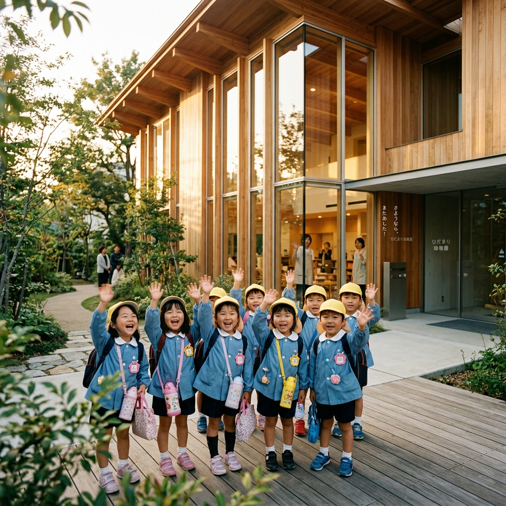

A DAY IN THE LIFE
日常という、
日常という、
大冒険。


大きな窓から朝日が差し込む、無垢の木が敷き詰められた教室。先生とお友達に元気にご挨拶をしたら、今日の大冒険が始まります。それぞれのペースで、好きなあそびを見つけていきます。

天気の良い日は、みんなで広大な園庭へ。泥や水、落ち葉を全身で感じながら遊びます。「ダメ」と言われない環境が、子どもたちの尽きない好奇心と創造力を育てています。

園内の厨房で作られた、地元の無農薬野菜をたっぷり使った給食。自分たちで配膳をし、食を通じて命のありがたさを学びます。食べるペースも子どもたちそれぞれの個性を尊重しています。

いっぱい遊んでお腹も満たされた後は、お昼寝の時間。柔らかな光が差し込む静かなお部屋で、先生のトントンに包まれながら深い眠りへ。心身の健やかな成長を支える、大切なひとときです。

夕暮れの柔らかい光の中、お迎えの時間。今日あった大冒険を自慢げに話しながら、お母さんと手を繋いで帰る後ろ姿。「また明日もいっぱい遊ぼう」という言葉が、私たちの何よりのエネルギーです。
行事というより、季節の手ざわり